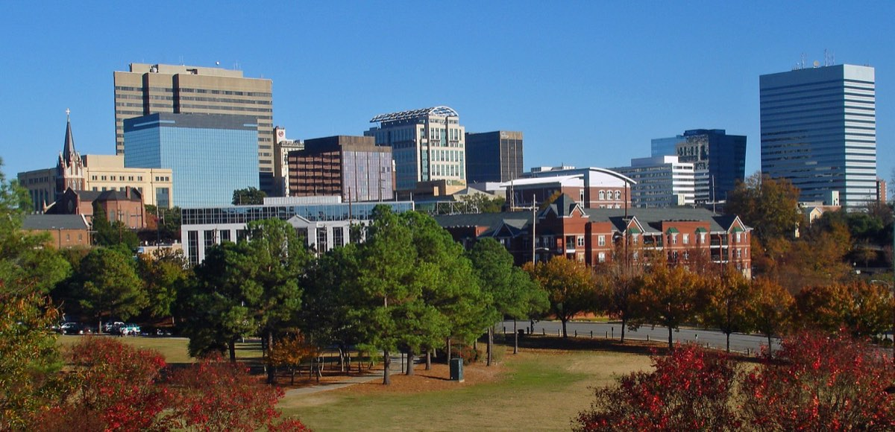

Our Service Areas
Statewide property management, from the Midlands to the Pee Dee and the Lowcountry.

Now viewing
Columbia, SC
Columbia, SC
Serving property owners across South Carolina.
Headquartered in Columbia, R.O.K.K.E Management serves the entire state of South Carolina, with a team large enough to manage properties wherever you own them and established coverage in four regions: Columbia and the Midlands, Florence, Darlington, and Charleston and the Lowcountry. Don't see your town below? We manage properties statewide, so reach out.
Select a community to see it.